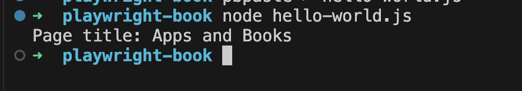
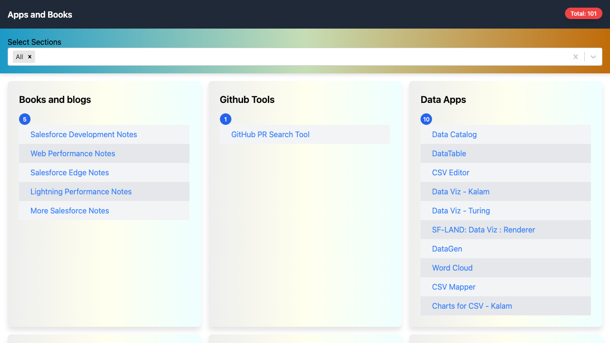

Hello World in Playwright
Here's a simple "Hello World" example using Playwright in JavaScript. This script will launch a browser, navigate to a web page, and print the title of the page.
1. Set Up Playwright
First, make sure you have Node.js installed. Then, install Playwright using npm:
npm init -y
npm install playwright
2. Create the Script
Create a file named hello-world.js and add the following code:
const { chromium, expect } = require('playwright');
(async () => {
// Launch a browser instance
const browser = await chromium.launch({ headless: false }); // Set to true for headless mode
const page = await browser.newPage();
const url = 'https://mohan-chinnappan-n5.github.io/apps/2/index.html';
// Navigate to a webpage
await page.goto(url);
// Print the title of the page
const title = await page.title();
console.log(`Page title: ${title}`);
expect(title).toBe('Apps and Books2');
// Close the browser
// await browser.close();
})();
3. Run the Script
Run the script using Node.js:
node hello-world.js

What This Script Does:
- Launches a Chromium browser instance.
- Opens a new page and navigates to
https://mohan-chinnappan-n5.github.io/apps/2/index.html. - Retrieves the title of the page.
- Captures a screenshot of the webpage and saves it as example-screenshot.png in the current directory.
- Prints the title to the console.

Using expect
import { chromium } from 'playwright';
import { test, expect } from '@playwright/test';
// Function to parse command-line arguments
function getArgument(argName) {
const index = process.argv.indexOf(argName);
return index !== -1 ? process.argv[index + 1] : null;
}
(async () => {
// Get the `--title` argument from the command line
const expectedTitle = getArgument('--title');
// Launch a browser instance
const browser = await chromium.launch({ headless: false }); // Set to true for headless mode
const page = await browser.newPage();
const url = 'https://mohan-chinnappan-n5.github.io/apps/2/index.html';
// Navigate to a webpage
await page.goto(url);
// Print the title of the page
const title = await page.title();
console.log(`Page title: ${title}`);
expect(title).toBe(expectedTitle);
// Take a screenshot and save it to the current directory
await page.screenshot( {path: 'homepage.png'});
// Close the browser
await browser.close();
})();
Running
➜ playwright-book node hello-world.mjs --title 'Apps and Books'
Page title: Apps and Books
Forcing error
➜ playwright-book node hello-world.mjs --title 'Apps and Books2'
Page title: Apps and Books
/Users/saromo/node_modules/playwright/lib/matchers/expect.js:198
if (!testInfo) return matcher.call(target, ...args);
^
Ge [Error]: expect(received).toBe(expected) // Object.is equality
Expected: "Apps and Books2"
Received: "Apps and Books"
at Proxy.<anonymous> (/Users/saromo/node_modules/playwright/lib/matchers/expect.js:198:37)
at file:///Users/uname/playwright-book/hello-world.mjs:28:17
{
matcherResult: {
actual: 'Apps and Books',
expected: 'Apps and Books2',
message: '\x1B[2mexpect(\x1B[22m\x1B[31mreceived\x1B[39m\x1B[2m).\x1B[22mtoBe\x1B[2m(\x1B[22m\x1B[32mexpected\x1B[39m\x1B[2m) // Object.is equality\x1B[22m\n' +
'\n' +
'Expected: \x1B[32m"Apps and Books\x1B[7m2\x1B[27m"\x1B[39m\n' +
'Received: \x1B[31m"Apps and Books"\x1B[39m',
name: 'toBe',
pass: false
}
}
Node.js v21.6.2